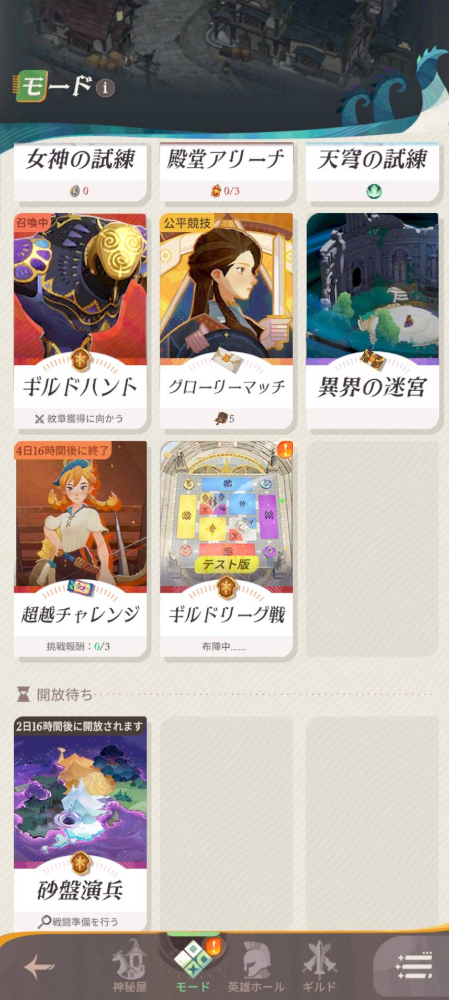
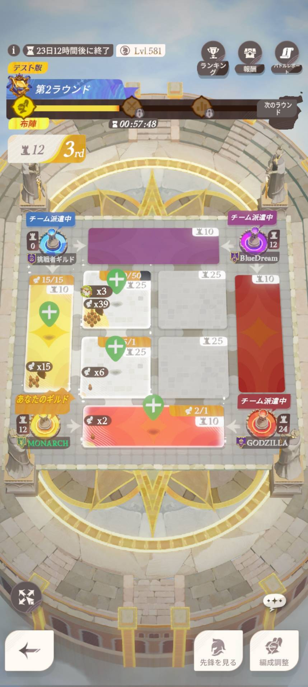
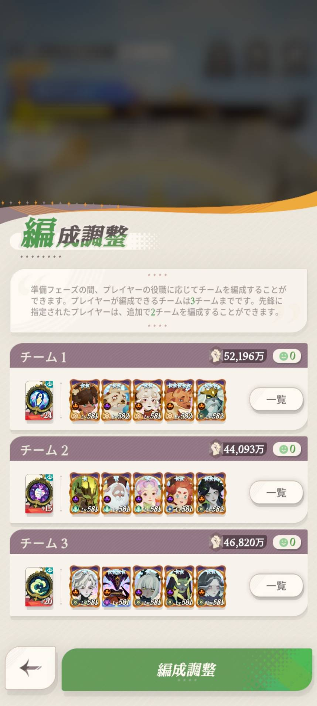
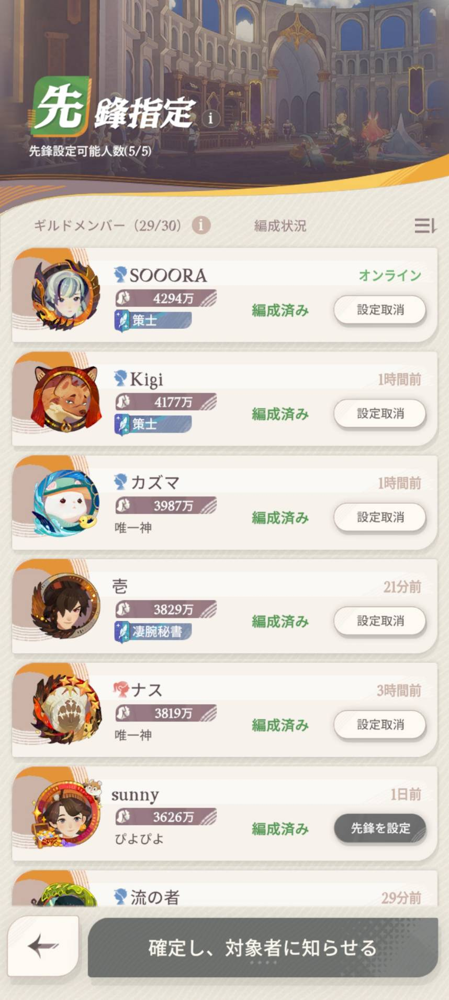
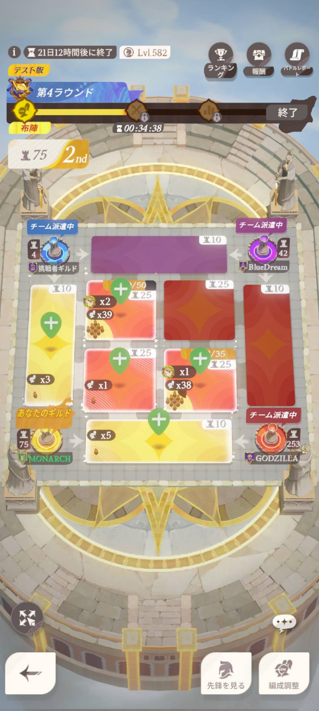
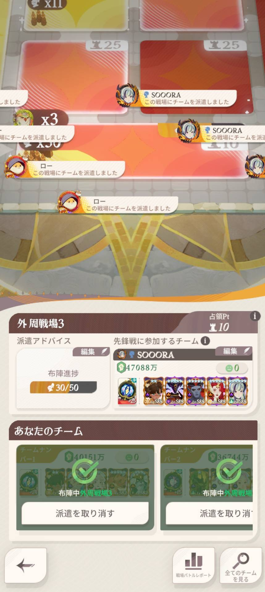

ギルドリーグ説明書
LifePCの適当ギルドリーグ説明！
みなさんギルドリーグは楽しんでいるかな？
テスト版の操作方法、ギルマスからの指示などを簡単に説明するよ
ギルドリーグ

ギルドリーグ戦ではみんなの協力が必要不可欠なモードとなっている！
ギルドリーグ戦の簡単な説明から！
ギルドリーグ戦概要

ギルドリーグ戦は4ギルドで対戦を行うことになる。
陣地取りに成功すれば、ポイントが獲得され、最終的にポイントが高いギルドが勝利することができる！
ポイントの取得方法はのちほど…
大まかな流れは「準備」「布陣」「戦闘」「結果」の流れになる。
「準備」は3日かけて行い、「布陣」「戦闘」「結果」は1日ごとに行われる。
「布陣」「戦闘」「結果」は全部で4回行われ、その工程を「ラウンド」と呼んでいる
準備フェーズ

一番初めは準備フェーズ。
このフェーズではギルマス、サブギルマスで行われる「先鋒戦」を選ぶ必要がある
またギルドメンバーは部隊の編成をして、出陣準備をしておくことになる。
ギルマス・サブギルマスの役目

先鋒戦では、各陣地の一番最初に戦える人を選ぶことができる！
先鋒戦では選ばれた人が、陣地に布陣して初めて先鋒戦に選ぶことができるので、そこも注意しておこう！
ギルドメンバーの役目
ギルドメンバーの初めてのお仕事は、まず3部隊を用意することから始まる！
アリーナと違って、戦う相手を選べないのと、相手を見てから配置をすることができないので注意！
個々のこれが1～3軍と思われるものを選抜して編成しよう！
布陣フェーズ

布陣フェーズは編成調整した部隊を配置するお仕事の時間！
締め切り時間は「21：00」と社畜には厳しい時間…
ここでギルドメンバーには大切な役割があり、注意する点があるので、一つずつ見ていこう！
推奨編成数
各布陣フェーズではギルマス・サブギルマスが決めた、「ここを攻めるぞ！」「ここを守るぞ！」と決めた陣地があります。
その場所を示すのが「推奨編成数」になり、下の画像が設定されていないときになります。
陣地の右上には「10」の表記がありますが、これはここのエリアを確保すれば「10」ポイントもらえるよ、という表記になるので無視してください！
では次は推奨編成数が設定されている場合は…
先ほどのポイントの上に「12/20」の表記があります。この表記が「20編成ほしい！」とギルマスからのお願いになります！
なのでギルマスからお給料（宝箱）をもらうために、その数値になるように、編成した部隊を配置する必要が出てきます。
部隊の派遣
ギルマスからのお願いを聞くため、編成した部隊を派遣しよう！
派遣する陣地を選択後、部隊を選ぶ必要があります。
未派遣の場合は「チームの派遣」ボタンが表示されるので、そこをタップするとその陣地に部隊を派遣することができます。

派遣済みの場合は「派遣を取り消す」ボタンが表示されるので、キャンセルすることもできます。
編成したのは3部隊いるので、横にスワイプして3編成をしっかりと派遣してくれよな
この派遣は21：00までとなっているからそこも注意な
戦闘フェーズ
戦闘フェーズでは、コンピュータが自動で行い戦いが行われる。
プレイヤーはその結果しか見ることができないので、22：30の結果を待とう！
ここで少しポイントの説明を…
先鋒戦勝利ポイント
各陣地の先鋒に選ばれた人・部隊が勝つと、その陣地を取った取ってないにも関わらず、少量のポイントを得られるぞ！
占領ポイント
先鋒戦の次は「混戦」が始まり、みんなが派遣した部隊が戦うことになる。
部隊は連勝するごとに少しずつ「疲労値」がたまっていき、戦力4,000万あろうが、途中で倒れることになる。
混戦で部隊数が残ったギルドが占領し、さきほどの推奨編成数で見た、占領ポイントを獲得することができる。
※ もともと占領していたところを奪われても、ポイントはマイナスにはならない
ギルドメンバーには4日間頑張って配置してもらう必要がある…（社畜にはつらい。。。）